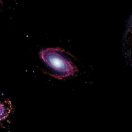

Los Wszechświata zależy od tego, czy wewnętrzne siły grawitacyjne powstrzymają jego ekspansję. Dwie główne możliwości ewolucji Wszechświata to:

Wielki Krach – jeśli ilość materii jest na tyle duża, by grawitacyjnie powstrzymać ekspansję, a następnie doprowadzić do zapadnięcia się
Wszechświata, odwrócenia etapów dotychczasowej jego ewolucji, aż do momentu, gdy wszystkie siły władające kosmosem będą znów połączone w jedną
wielkość. Temperatura wtedy będzie wzrastać wraz ze wzrostem gęstości – powrót do osobliwości (taką możliwość wyklucza się obecnie na podstawie
faktów obserwacyjnych, takich jak wzrastające tempo rozszerzania Wszechświata).
Wielki Chłód – jeśli ilość materii jest zbyt mała, by siły grawitacyjne mogły powstrzymać ekspansję, to Wszechświat będzie rozszerzać się wiecznie
(i to coraz szybciej, jeżeli stała kosmologiczna ma dodatnią wartość), a jego temperatura spadać. Jeden ze scenariuszy mówi, że za 10 bilionów lat,
długo po tym, jak Słońce i podobne do niego gwiazdy się wypalą, kosmos będzie wypełniony wielką, choć wciąż malejącą liczbą czerwonych karłów. Za
biliard lat jedynymi pozostałościami po gwiazdach będą takie obiekty, jak czarne dziury, gwiazdy neutronowe oraz wystygłe białe i brązowe karły.
Czarne dziury będą pożerały wszystko, ale nawet one znikną, stopniowo wyparowując (poprzez promieniowanie Hawkinga). Proces ten zajmie 1098 lat.
Później Wszechświat będą wypełniały jedynie elektrony, pozytony, neutrina i fotony o bardzo małej koncentracji.
Według jeszcze innej koncepcji, koniec znanego ludziom świata może nastąpić wraz z uwolnieniem energii próżni. Wiele obserwacji wskazuje, że Wszechświat
posiada niezerową energię próżni. Jeżeli istnieje stan próżni o niższej energii, to Wszechświat jest w stanie próżni fałszywej i może dojść do
tunelowania do niższego stanu. Będzie się to wiązać ze zmianą niektórych stałych fizycznych, np. mas wielu cząstek. Nastąpi też koniec takiego
Wszechświata, jaki znamy, ponieważ np. atomy mogą stać się nietrwałe